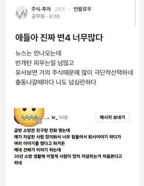

공무원 소방쪽에서 자살자 많다는 이야기 나오는중
대부분 주식이나 코인 투자 실패인거 같은데
근데 문제는 아직 제대로된 반대매매도 안나왔을 뿐더러
신용잔고가 아직 26조임
진짜 참사는 아직 시작도 안했는데 벌써부터 이러면.....

공무원 소방쪽에서 자살자 많다는 이야기 나오는중
대부분 주식이나 코인 투자 실패인거 같은데
근데 문제는 아직 제대로된 반대매매도 안나왔을 뿐더러
신용잔고가 아직 26조임
진짜 참사는 아직 시작도 안했는데 벌써부터 이러면.....
단톡방에 회사 앞 자동차 연탄 자살자 소식 2건 접하긴 함
빚투안한다는 전제하에 지수투자하면
오히려 하락장을 반겨야하지않나?
비쌀때사면 ㅈ같던데
쌀때 오히려 몸집키우기 좋아서 나는 지금이 좀더 유지됬으면좋겠음
비쌀때는 오히려 니들 비싸다고 안사자나
근데 결국 내 손에 돈이 들어오려면 누군가는 돈을 내야되는거잔아?
그게 쟤네들인거지 .....
지금 내 snp 마이너스 11퍼야….엌
난 -23 ^^
주식 자체를 안하니 뭐....힘내라
현명한 청년
부럽다
아 그래서 정부에서 루리웹에 자살 언급 금지 때렸구나
알빠노! 부동산 하면 저지능이라고 하던 애들 수두룩 하던뎈ㅋㅋㅋ
갈사람들 빨리빨리 갑시다
진짜 삐에로가 말하는대로 실천을 해버리네 ㄷㄷ
걍 국민연금이 제때 리밸런싱 해서 개떡상 못하게 하고, 하락장에서 다시 사서 개떡락 못하게 했어야 했음... 못한 이유는... 더보기
내돈으로 우량주 부랄쯤에사서 장박하면 오르거나 내리거나 그냥 구경만함
어떡하냐........에휴.....